- Grid container the element to which the display: grid applies. This is the direct parent for all grid elements. In this example, container is a container .
- Grid item the child elements of the container. Here item is a grid item, but not a sub-item.
- Sub-item the child of grid item. And it does not inherit the grid.
CSS Grid Layout
the most powerful layout system currently available in CSS
by Lazarev AleksandrAbout:
- What is a GRID?
- Browser support
- Basic terms
- Container properties
- Properties of items
What is a GRID?
What is a GRID?
CSS Grid Layout is the most powerful layout system currently available in CSS. This is a two-dimensional system that can handle both columns and rows, in contrast to the Flexbox, which is largely a one-dimensional system.
What is a GRID?
CSS Grid Layout (aka "Grid") is a two-dimensional grid-based layout system, the purpose of which is to completely change the way that web-based user interfaces are designed. CSS was always used to lay out web pages, but it never did a good job. At first we used tables, then wrap (floats), positioning and inline blocks (inline-block), but all of these methods are essentially just hacks and omit many important functionalities (for example, vertical alignment). Flexbox helped, but it is designed for simpler one-dimensional layouts, not for complex two-dimensional ones (in fact, Flexbox and Grid work very well together). CSS Grid - this is the first module created specifically to solve layout problems, which until now we have solved using hacks when creating websites.
Browser support
Browser support
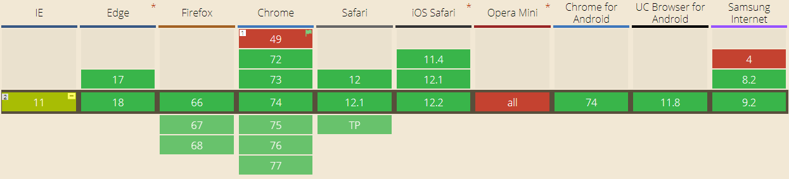Partial support Supported Not supported
- Coverage:
- unprefixed: 89.78%
- global: 89.78% + 2.58% = 92.36%
Basic terms
Basic terms

-
-
- track (column)
- track (row)
- cell
- area
- container
- item
- sub-item
Basic terms
Grid lines
- Grid lines is the horizontal and vertical grid container delimiters. These lines are on either side of a column or row. They have direct and reverse numbering.
Grid track. Column and Row
- Grid track is the space between two adjacent grid lines, vertical (Column) or horizontal (Row).
Grid cell
- A grid cell is the smallest indivisible unit of a grid container that can be referenced when positioning grid elements. Formed at the intersection of the grid row and grid column.
Grid area
- A grid area is the space inside the grid of a container into which one or more grid elements can be placed. This element can consist of one or more grid cells.
Container properties
Container properties
- display
- grid-template-columns
- grid-template-rows
- grid-template-areas
- grid-template
- grid-column-gap
- grid-row-gap
- grid-gap
- justify-items
- align-items
- justify-content
- align-content
- grid-auto-columns
- grid-auto-rows
- grid-auto-flow
- grid
display
Defines the element as a container and sets a new mesh formatting context for its contents.
- Values:
- grid - forms a grid as a block;
- inline-grid - forms a grid as an inline block;
- subgrid - if your container is also an element (nested grid), then you can use this property to indicate that the row / column sizes are taken from the parent element and not define your own;
grid-template-columns & grid-template-rows
Defines the columns and rows of the grid using a list of values separated by spaces. Values represent the size of the track, and the spaces between them represent the grid lines.
- Values:
- track-size - can be a fixed size, percentage or part of the free space in the grid (determined using the unit fr (fraction));
- line-name - arbitrary name of your choice;
grid-template-columns & grid-template-rows
When you leave empty space between track values, the grid lines are automatically assigned numeric names
grid-template-columns & grid-template-rows
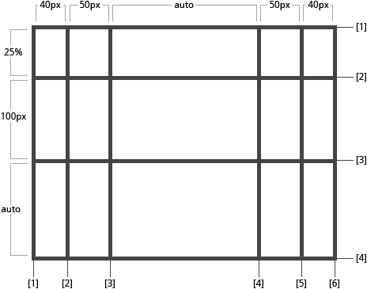grid-template-columns & grid-template-rows
If your definition contains duplicate parts, you can use the repeat() notation:
grid-template-columns & grid-template-rows
The fr unit allows you to customize the size of the tracks as part of the free space in the container. Here is an example that sets each element one third the width of the container.
grid-template-areas
Defines a grid pattern referring to the names of areas that are set using the grid-area property.
Repetition of the name of the region leads to the fact that the content covers these cells. Dot means empty cell.
- Values:
- grid-area-name - the area name specified using the grid-area;
- . - a point indicating an empty cell;
- none - areas not defined;
grid-template-areas
- 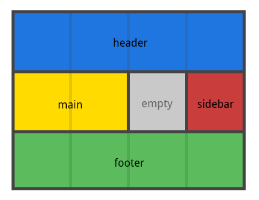
- Notice that you don’t name the lines, just the areas. If you use this syntax, it will be automatically named.
grid-template
The abbreviation for grid-template-rows, grid-template-columns, and grid-template-areas.
- Values:
- none- sets all three properties to their initial value;
- subgrid - sets grid-template-rows and grid-template-columns to subgrid, and grid-template-areas to its initial value;
- <grid-template-rows> / <grid-template-columns> - sets grid-template-columns and grid-template-rows to a specific value, respectively, and sets grid-template-areas to none;
grid-column-gap grid-row-gap
Specifies the size of the width of the lines. You can think of this as setting the width of indentations between columns and rows.
- <line-size> - size value;
grid-column-gap grid-row-gap
- 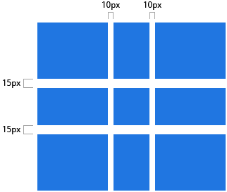
grid-gap
The abbreviation for grid-row-gap and grid-column-gap.
- <grid-row-gap> <grid-column-gap> - size values;
justify-items
Aligns the content along the line axis. This value applies to all grid elements within the container.
- Value:
- start - aligns the content on the left side of the area;
- end - aligns the content on the right side of the area;
- center - aligns the contents to the center of the area;
- stretch - fills the entire width of the area (by default);
justify-items
-
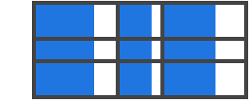
-
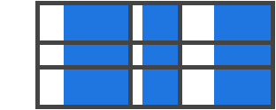
align-items
Aligns the content along the column axis. This value applies to all grid elements within the container.
- Value:
- start - alignment of elements on the upper part of the area;
- end - alignment of elements at the bottom of the area;
- center - alignment of elements in the center of the area;
- stretch - fills the entire height of the area (by default);
align-items
-
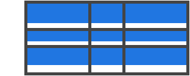
-
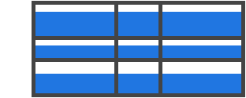
justify-content
Sometimes the total mesh size may be smaller than the size of the container. This can happen if all grid elements have fixed units, for example, px. In this case, you can set the alignment of the grid inside the container. This property aligns the grid along the row axis.
- Value:
- stretch - scales the elements so that the grid can fill the entire width of the container;
- space-around - the same space between elements, and half-size indents at the edges;
- space-between - the same space between the elements, without indents at the edges;
- space-evenly - the same space between the elements, and full-size indents at the edges;
justify-content
-
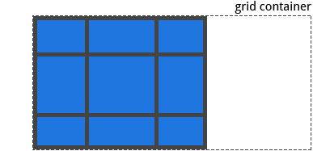
-

align-content
Sometimes the total mesh size may be smaller than the size of the container. This can happen if all mesh elements have a fixed unit of measurement, for example, px. In this case, you can set the alignment of the grid inside the container. This property aligns the grid along the axis of the column.
- Value:
- stretch - scales the elements so that the grid can fill the entire height of the container;
- space-around - the same space between elements, and half-size indents at the edges;
- space-between - the same space between the elements, without indents at the edges;
- space-evenly - the same space between the elements, and full-size indents at the edges;
align-content
-
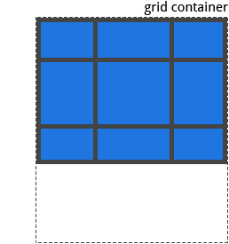
-
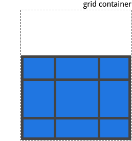
Properties for
child elements
(Grid item)
Properties grid item
- grid-column-start
- grid-column-end
- grid-row-start
- grid-row-end
- grid-column
- grid-row
- grid-area
- justify-self
- align-self
grid-column-start grid-column-end
grid-row-start grid-row-end
Determine the location in the grid referring to specific lines. grid-column-start / grid-row-start is the line from which the element starts,
and grid-column-end / grid-row-end is the line on which the element ends.
- Value:
- <line> - can be a number that refers to a numbered line;
- span <number> - is the element that will cover the number of tracks provided;
- span <name> - the element will span until it reaches the line with the specified name;
- auto - indicates auto placement, auto reach, or default reach;
grid-column-start grid-column-end
grid-row-start grid-row-end
-
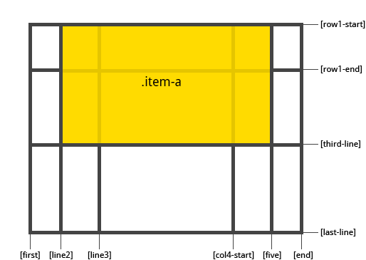
grid-column-start grid-column-end
grid-row-start grid-row-end
-
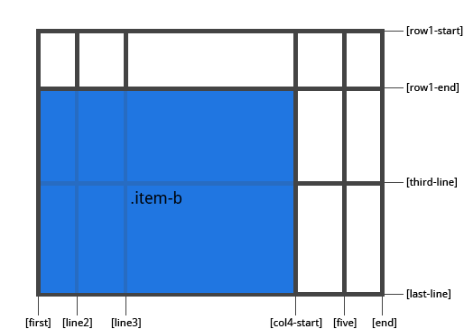
grid-column & grid-row
Determine the location in the grid referring to specific lines. grid-column-start / grid-row-start is the line from which the element starts,
and grid-column-end / grid-row-end is the line on which the element ends.
- Value:
- <line> - can be a number that refers to a numbered line;
- span <number> - is the element that will cover the number of tracks provided;
- span <name> - the element will span until it reaches the line with the specified name;
- auto - indicates auto placement, auto reach, or default reach;
grid-column & grid-row
The abbreviation for grid-column-start + grid-column-end,
and grid-row-start + grid-row-end, respectively.
and grid-row-start + grid-row-end, respectively.
- Value:
- <start-line> / <end-line> - each of them accepts the same thing as in the long version, including coverage;
grid-column & grid-row
-
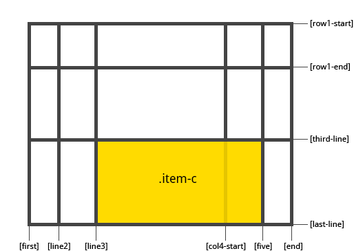
grid-area
Gives the name of the element so that it can be referenced using the property created through the grid-template-areas.
Alternatively, this property can be used as a shorthand for grid-row-start + grid-column-start + grid-row-end + grid-column-end.
- Value:
- <name> - is the name you select;
- <row-start> / <column-start> / <row-end> / <column-end> - can be numbering or line names;
grid-area
-
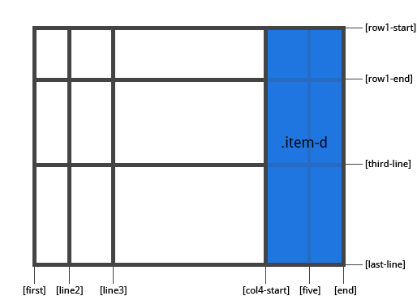
justify-self
Aligns the content of the element along the axis of the string. This value applies to content within a single item.
- Value:
- start - aligns the content on the left side of the area;
- end - aligns the content on the right side of the area;
- center - aligns the contents in the center of the area;
- stretch - fills the entire width of the area (by default);
justify-self
-

-
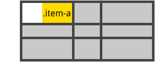
align-self
Aligns the contents of the element along the axis of the column. This value applies to content within a single item.
- Value:
- start - aligns the content to the top of the area;
- end - aligns the content at the bottom of the area;
- center - aligns the contents in the center of the area;
- stretch - fills the entire height of the area (by default);